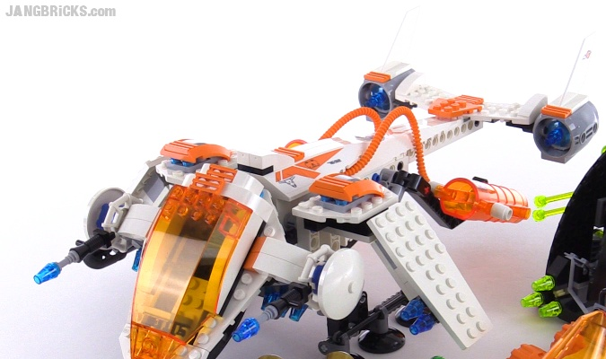
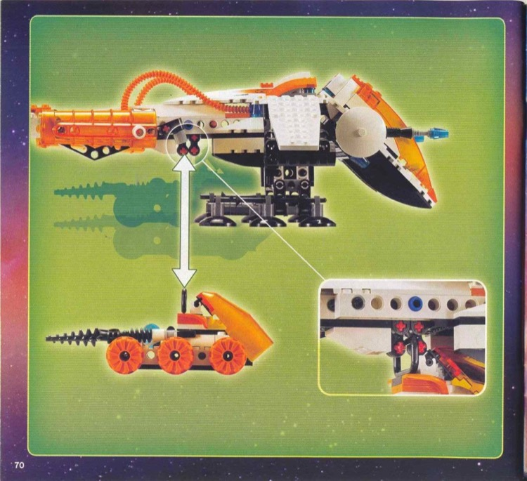

Видимі адаптації
- Один вантаж під корпусом: Crew, Rover, T3-Trike або Claw-Tank.
- Корпус 7692, бурштинова кабіна й помаранчеві трубки без змін.
Повітряний носій LEGO 7692 з одним змінним ігровим вантажем
Фото зібраного MX-71 · без перемальовування


З'єднання LEGO, с. 70.
Показує знімний rover під корпусом. Це доказ кріплення, не окрема цільова модель.
Зовнішні огляди звірено між собою; головний target показує реальну зібрану модель. У попередній пропозиції неправильно вказано синю кабіну й перебільшено висоту опор.
Stable ID: unit.astronauts.mx71_recon_dropship · Design Spec · Маніфест походження target.
Перевірка: ./tools/verify.sh --targeted design-package. Директорське прийняття зафіксовано 2026-09-25. T084 авторизовано, але не розпочато. Розміри вантажних класів і виробнича геометрія залишаються перевірками T084.
Гілка codex/m85-t083, локальні незлиті зміни. T084 не авторизовано й не розпочато.